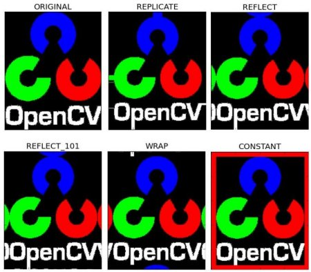

Basic Operations on Images
Goal
Learn to:
- Access pixel values and modify them
- Access image properties
- Setting Region of Interest (ROI)
- Splitting and Merging images
Almost all the operations in this section is mainly related to Numpy rather than OpenCV. A good knowledge of Numpy is required to write better optimized code with OpenCV.
*( Examples will be shown in Python terminal since most of them are just single line codes )*
Accessing and Modifying pixel values
Let’s load a color image first:
>>> import cv2 >>> import numpy as np >>> img = cv2.imread('messi5.jpg')
You can access a pixel value by its row and column coordinates. For BGR image, it returns an array of Blue, Green, Red values. For grayscale image, just corresponding intensity is returned.
>>> px = img[100,100] >>> print( px ) [157 166 200] # accessing only blue pixel >>> blue = img[100,100,0] >>> print( blue ) 157
You can modify the pixel values the same way.
>>> img[100,100] = [255,255,255] >>> print( img[100,100] ) [255 255 255]
warning
Numpy is a optimized library for fast array calculations. So simply accessing each and every pixel values and modifying it will be very slow and it is discouraged.
Above mentioned method is normally used for selecting a region of array, say first 5 rows and last 3 columns like that. For individual pixel access, Numpy array methods, array.item() and array.itemset() is considered to be better. But it always returns a scalar. So if you want to access all B,G,R values, you need to call array.item() separately for all.
Better pixel accessing and editing method :
# accessing RED value >>> img.item(10,10,2) 59 # modifying RED value >>> img.itemset((10,10,2),100) >>> img.item(10,10,2) 100
Accessing Image Properties
Image properties include number of rows, columns and channels, type of image data, number of pixels etc.
Shape of image is accessed by img.shape. It returns a tuple of number of rows, columns and channels (if image is color):
>>> print( img.shape ) (342, 548, 3)
If image is grayscale, tuple returned contains only number of rows and columns. So it is a good method to check if loaded image is grayscale or color image.
Total number of pixels is accessed by img.size :
>>> print( img.size ) 562248
Image datatype is obtained by img.dtype:
>>> print( img.dtype ) uint8
img.dtype is very important while debugging because a large number of errors in OpenCV-Python code is caused by invalid datatype.
Image ROI
Sometimes, you will have to play with certain region of images. For eye detection in images, first face detection is done all over the image and when face is obtained, we select the face region alone and search for eyes inside it instead of searching whole image. It improves accuracy (because eyes are always on faces :D ) and performance (because we search for a small area)
ROI is again obtained using Numpy indexing. Here I am selecting the ball and copying it to another region in the image:
>>> ball = img[280:340, 330:390] >>> img[273:333, 100:160] = ball
Check the results below:

Splitting and Merging Image Channels
Sometimes you will need to work separately on B,G,R channels of image. Then you need to split the BGR images to single planes. Or another time, you may need to join these individual channels to BGR image. You can do it simply by:
>>> b,g,r = cv2.split(img) >>> img = cv2.merge((b,g,r))
Or
>>> b = img[:,:,0]
Suppose, you want to make all the red pixels to zero, you need not split like this and put it equal to zero. You can simply use Numpy indexing, and that is more faster.
>>> img[:,:,2] = 0
warning
cv2.split() is a costly operation (in terms of time). So do it only if you need it. Otherwise go for Numpy indexing.
Making Borders for Images (Padding)
If you want to create a border around the image, something like a photo frame, you can use cv2.copyMakeBorder() function. But it has more applications for convolution operation, zero padding etc. This function takes following arguments:
- src - input image
- top, bottom, left, right - border width in number of pixels in corresponding directions
- borderType - Flag defining what kind of border to be added. It can be following types:
- cv2.BORDER_CONSTANT - Adds a constant colored border. The value should be given as next argument.
- cv2.BORDER_REFLECT - Border will be mirror reflection of the border elements, like this : fedcba|abcdefgh|hgfedcb
- cv2.BORDER_REFLECT_101 or cv2.BORDER_DEFAULT - Same as above, but with a slight change, like this : gfedcb|abcdefgh|gfedcba
- cv2.BORDER_REPLICATE - Last element is replicated throughout, like this: aaaaaa|abcdefgh|hhhhhhh
- cv2.BORDER_WRAP - Can’t explain, it will look like this : cdefgh|abcdefgh|abcdefg
- cv2.BORDER_CONSTANT - Adds a constant colored border. The value should be given as next argument.
- value - Color of border if border type is cv2.BORDER_CONSTANT
Below is a sample code demonstrating all these border types for better understanding:
import cv2 import numpy as np from matplotlib import pyplot as plt BLUE = [255,0,0] img1 = cv2.imread('opencv-logo.png') replicate = cv2.copyMakeBorder(img1,10,10,10,10,cv2.BORDER_REPLICATE) reflect = cv2.copyMakeBorder(img1,10,10,10,10,cv2.BORDER_REFLECT) reflect101 = cv2.copyMakeBorder(img1,10,10,10,10,cv2.BORDER_REFLECT_101) wrap = cv2.copyMakeBorder(img1,10,10,10,10,cv2.BORDER_WRAP) constant= cv2.copyMakeBorder(img1,10,10,10,10,cv2.BORDER_CONSTANT,value=BLUE) plt.subplot(231),plt.imshow(img1,'gray'),plt.title('ORIGINAL') plt.subplot(232),plt.imshow(replicate,'gray'),plt.title('REPLICATE') plt.subplot(233),plt.imshow(reflect,'gray'),plt.title('REFLECT') plt.subplot(234),plt.imshow(reflect101,'gray'),plt.title('REFLECT_101') plt.subplot(235),plt.imshow(wrap,'gray'),plt.title('WRAP') plt.subplot(236),plt.imshow(constant,'gray'),plt.title('CONSTANT') plt.show()
See the result below. (Image is displayed with matplotlib. So RED and BLUE planes will be interchanged):
Additional Resources
Exercises